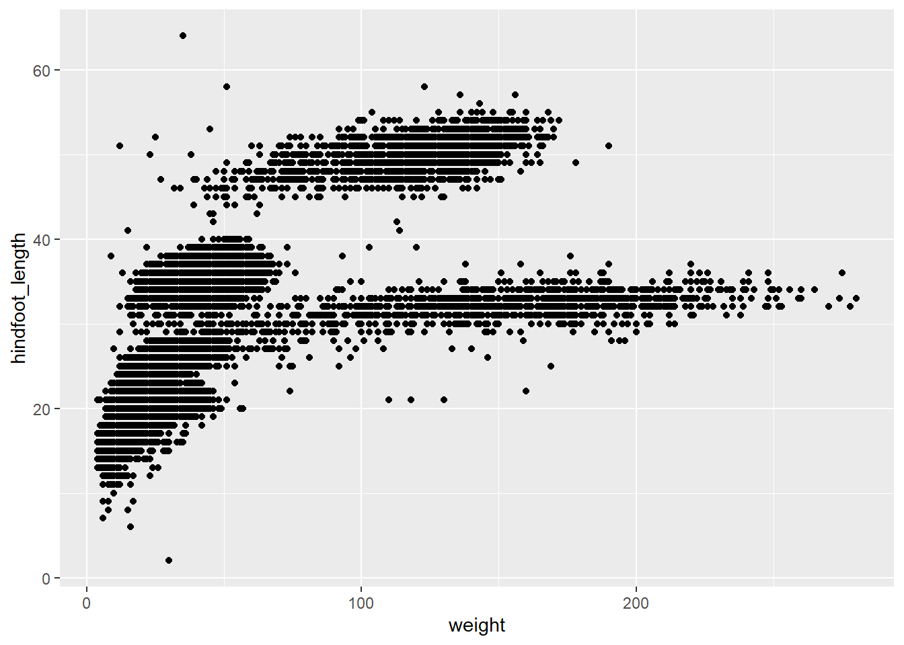
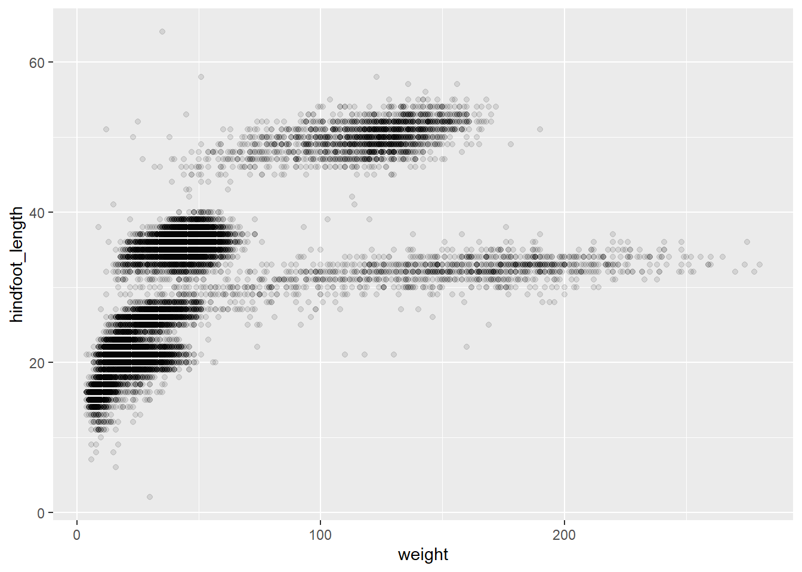
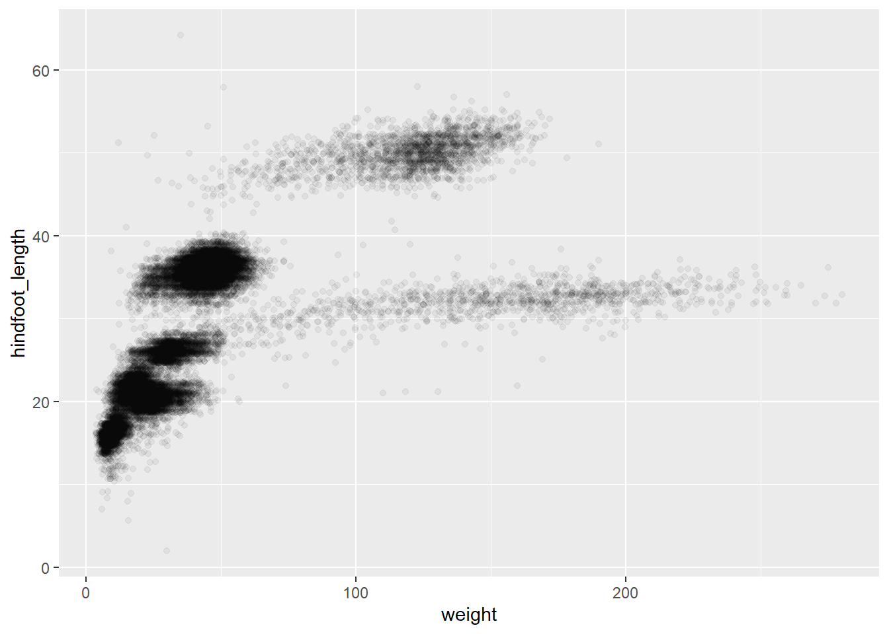
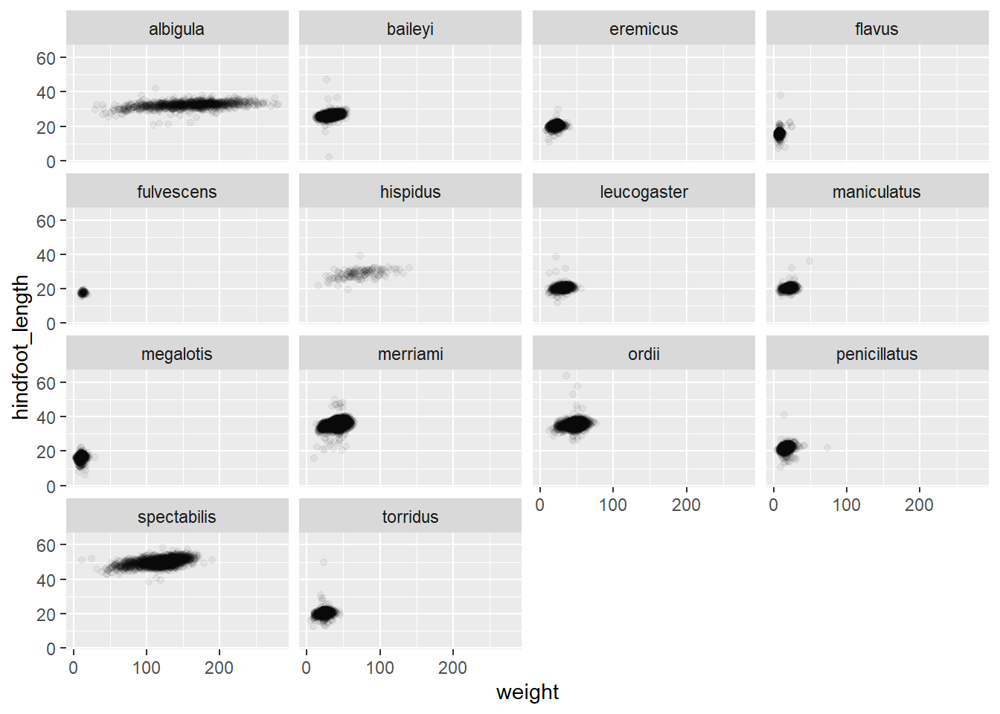
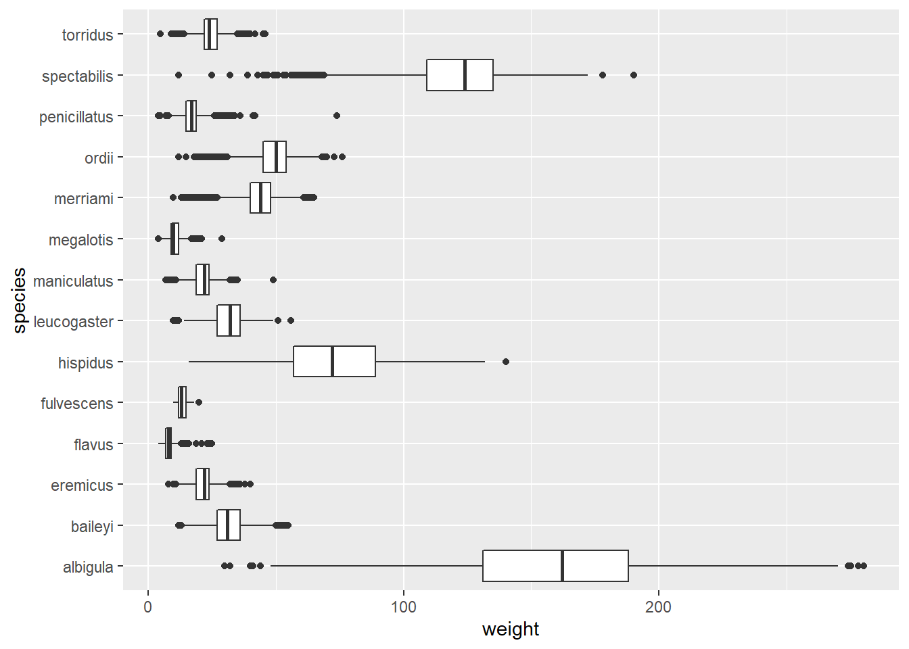
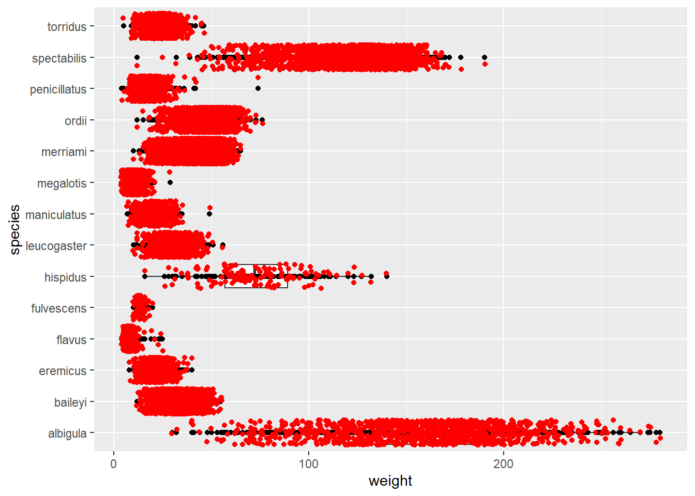
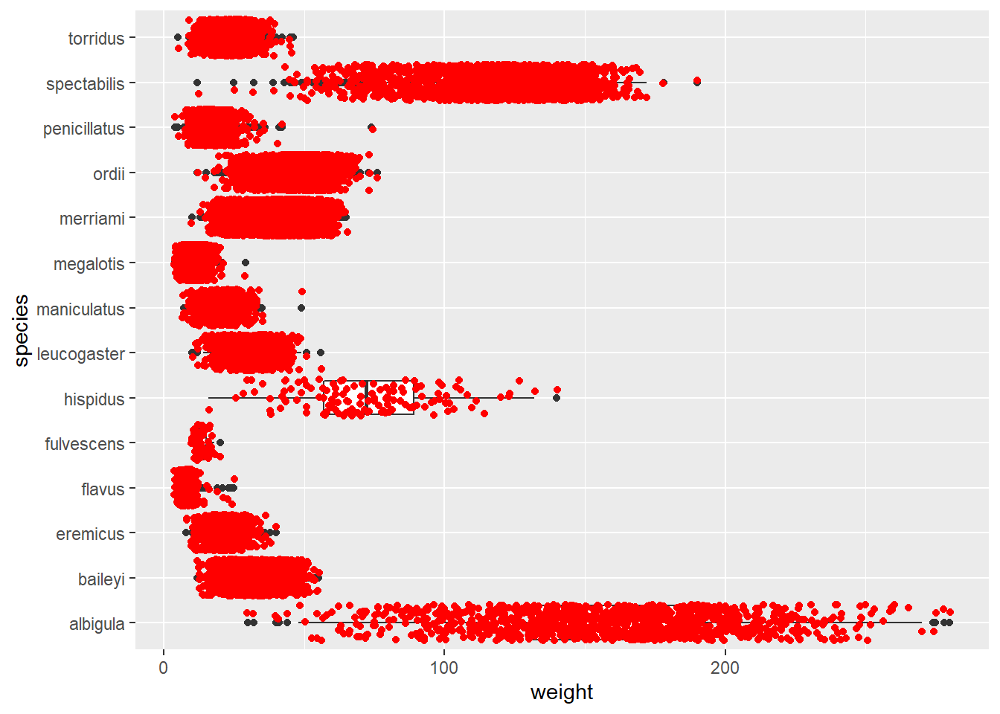
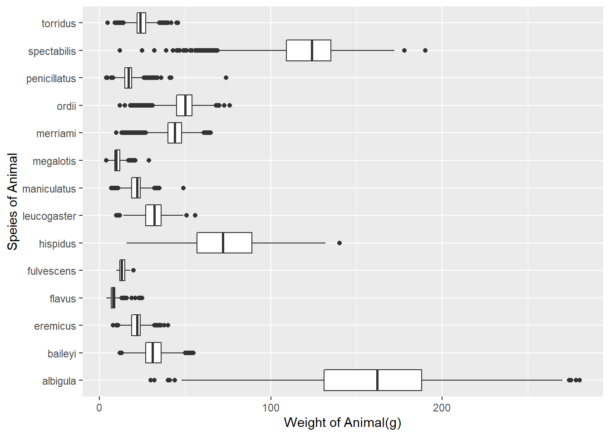
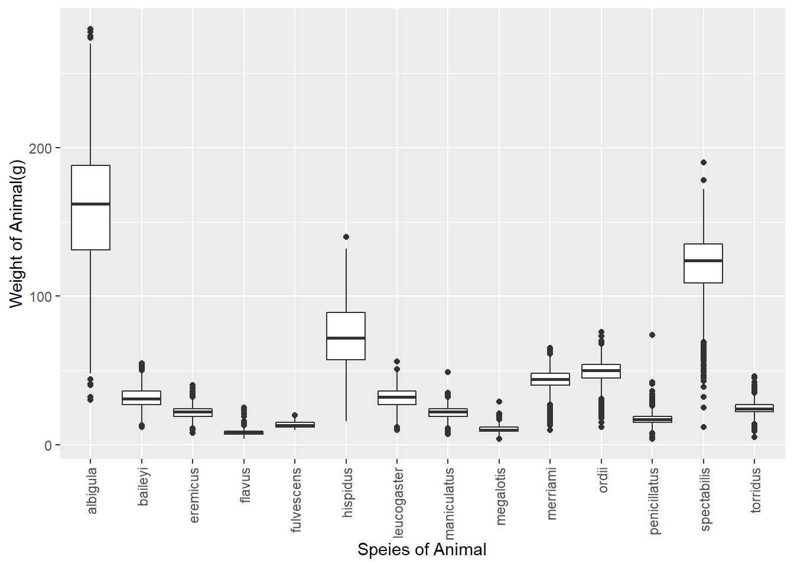
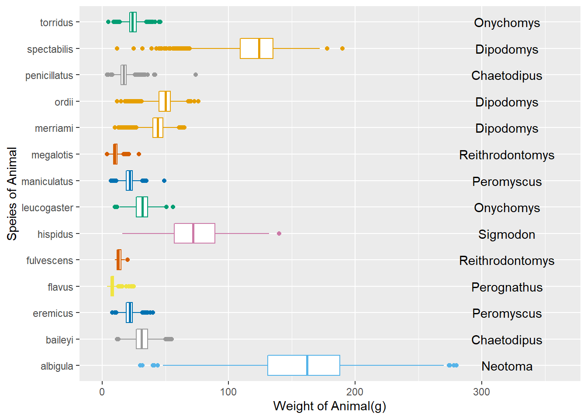

library(package = 'tidyverse')Lab 2: Exploring Rodents with ggplot2
Lab Instructions
The questions in this lab are noted with numbers and boldface. Each question will require you produce code, whether it is one line or multiple lines.
This document is quite “plain,” meaning it does not have any special formatting. As part of your demonstration of working with Quarto documents, I would encourage you to spice your documents up (e.g., declaring execution options, specifying how your figures should be output, formatting your code output).
Seeking Help
Part of learning to program is learning from a variety of resources. Thus, I expect you will use resources beyond the textbook used for this course. However, there is an important balance between copying someone else’s code and using their code to learn. The course syllabus defines what is considered plagiarism in this course. Essentially, if you use external resources, I want to know about it. You can “inform” me of any resources you used by pasting the link to the resource in a code comment next to where you used that resource.
You are permitted and encouraged to work with your teammates as you complete the lab assignment, but you are expected to do your own work. Copying from each other is cheating, and letting people copy from you is also cheating. Don’t do either of those things.
Set-up
In the code chunk below load in the packages necessary for your analysis. You should only need the tidyverse and here packages for this analysis, unless you decide to use additional resources.
Data Context
The Portal Project is a long-term ecological study being conducted near Portal, AZ. Since 1977, the site has been used to study the interactions among rodents, ants and plants and their respective responses to climate. To study the interactions among organisms, we experimentally manipulate access to 24 study plots. This study has produced over 100 scientific papers and is one of the longest running ecological studies in the U.S.
We will be investigating the animal species diversity and weights found within plots at the Portal study site. The dataset is stored as a comma separated value (CSV) file. Each row holds information for a single animal, and the columns represent:
| Column | Description |
|---|---|
| record_id | Unique id for the observation |
| month | month of observation |
| day | day of observation |
| year | year of observation |
| plot_id | ID of a particular plot |
| species_id | 2-letter code |
| sex | sex of animal (“M”, “F”) |
| hindfoot_length | length of the hindfoot in mm |
| weight | weight of the animal in grams |
| genus | genus of animal |
| species | species of animal |
| taxon | e.g. Rodent, Reptile, Bird, Rabbit |
| plot_type | type of plot |
Reading the Data into R
We have seen in the practice activity that when importing a dataframe, the columns that contain characters (i.e., text) can be coerced (=converted) into the factor data type. We could set stringsAsFactors to FALSE to avoid this hidden argument to convert our data type.
For this lab we will use the readr package (from the tidyverse) to read in the data. We’ll read in our data using the read_csv() function instead of the read.csv() function. This function does not coerce character variables to factors, a behavior that many in the R community feel is unappealing.
1. Using the read_csv() function and the here package, to write the code necessary to load in the surveys.csv dataset. For simplicity, name the dataset surveys.
# Code for question 1!
df_surveys <- read_csv(here::here('Week 2','Lab 2','surveys.csv'))Inspecting the Data
2. What are the dimensions of these data?
dim(x = df_surveys)[1] 30463 15There are 30463 rows and 15 columns.
3. What are the data types of the variables in the dataset?
glimpse(df_surveys)Rows: 30,463
Columns: 15
$ record_id <dbl> 63, 64, 65, 66, 67, 68, 69, 71, 74, 75, 78, 79, 81, 82…
$ month <dbl> 8, 8, 8, 8, 8, 8, 8, 8, 8, 8, 8, 8, 8, 8, 8, 8, 8, 8, …
$ day <dbl> 19, 19, 19, 19, 19, 19, 19, 19, 19, 19, 19, 19, 19, 19…
$ year <dbl> 1977, 1977, 1977, 1977, 1977, 1977, 1977, 1977, 1977, …
$ plot_id <dbl> 3, 7, 4, 4, 7, 8, 2, 7, 8, 8, 1, 7, 4, 4, 6, 19, 23, 1…
$ species_id <chr> "DM", "DM", "DM", "DM", "DM", "DO", "PF", "DM", "PF", …
$ sex <chr> "M", "M", "F", "F", "M", "F", "M", "F", "M", "F", "M",…
$ hindfoot_length <dbl> 35, 37, 34, 35, 35, 32, 15, 36, 12, 32, 16, 34, 14, 35…
$ weight <dbl> 40, 48, 29, 46, 36, 52, 8, 35, 7, 22, 9, 42, 8, 41, 37…
$ date <date> 1977-08-19, 1977-08-19, 1977-08-19, 1977-08-19, 1977-…
$ day_of_week <chr> "Fri", "Fri", "Fri", "Fri", "Fri", "Fri", "Fri", "Fri"…
$ plot_type <chr> "Long-term Krat Exclosure", "Rodent Exclosure", "Contr…
$ genus <chr> "Dipodomys", "Dipodomys", "Dipodomys", "Dipodomys", "D…
$ species <chr> "merriami", "merriami", "merriami", "merriami", "merri…
$ taxa <chr> "Rodent", "Rodent", "Rodent", "Rodent", "Rodent", "Rod…Double: record_id, month, day, year, plot_id, hindfoot_length, weight
Character: species_id, sex, day_of_week, plot_type, genus, species, taxa
Date: Date
Plotting with ggplot2
ggplot() graphics are built step by step by adding new elements. Adding layers in this fashion allows for extensive flexibility and customization of plots.
To build a ggplot(), we will use the following basic template that can be used for different types of plots:
ggplot(data = <DATA>, mapping = aes(<VARIABLE MAPPINGS>)) + <GEOM_FUNCTION>()
Let’s get started!
Scatterplot
4. First, let’s create a scatterplot of the relationship between weight (on the x-axis) and hindfoot_length (on the y-axis).
# Code for question 4!
ggplot(data = df_surveys, mapping = aes(x = weight, y = hindfoot_length)) +
geom_point()
We can see there are a lot of points plotted on top of each other. Let’s try and modify this plot to extract more information from it.
5. Let’s add transparency (alpha) to the points, to make the points more transparent and (possibly) easier to see.
#Code for question 5!
ggplot(data = df_surveys, mapping = aes(x = weight,
y = hindfoot_length)) +
geom_point(alpha = .1)
Well, that is better, but there are still large clumps of data being plotted on top of each other. Let’s try another tool!
6. Add some jitter to the points in the scatterplot, using geom_jitter().
# Code for question 6!
ggplot(data = df_surveys, mapping = aes(x = weight,
y = hindfoot_length)) +
geom_jitter(alpha = .05)
Faceting
Despite our best efforts there is still a substantial amount of overplotting occurring in our scatterplot. Let’s try splitting the dataset into smaller subsets and see if that allows for us to see the trends a bit better.
7. Facet your jittered scatterplot by species.
# Code for question 7
ggplot(data = df_surveys, mapping = aes(x = weight,
y = hindfoot_length)) +
geom_jitter(alpha = .05) +
facet_wrap(~species)
Boxplots & Density Ridges
8. Create side-by-side boxplots to visualize the distribution of weight within each species.
# Code for question 8 (and 9)!
ggplot(data = df_surveys, mapping = aes(x = weight, y = species)) +
geom_boxplot()
A fundamental complaint of boxplots is that they do not plot the raw data. However, with ggplot we can add the raw points on top of the boxplots!
9. Add another layer to your previous plot (above) that plots each observation.
Alright, this should look less than optimal. Your points should appear rather stacked on top of each other. To make them less stacked, we need to jitter them a bit, using geom_jitter().
ggplot(data = df_surveys, mapping = aes(x = weight, y = species)) +
geom_boxplot() +
geom_point() +
geom_jitter(color = 'red')
10. Remove the previous layer you had and include a geom_jitter() layer.
That should look much better! But there is another problem! You should notice that in the code above there are both red points and black points. So, some of the observations are being plotted twice!
ggplot(data = df_surveys, mapping = aes(x = weight, y = species)) +
geom_boxplot()+
geom_jitter(color = 'red')
11. Inspect the help file for geom_boxplot() and see how you can remove the outliers from being plotted by geom_boxplot(). Make this change in the code above!
ggplot(data = df_surveys, mapping = aes(x = weight, y = species)) +
geom_boxplot(outlier.shape = NA)+
geom_jitter(color = 'red')Customization
Some small changes that make big differences to plots. One of these changes are better labels for a plot’s axes and legend.
10. Using the code you created in question 8, modify the x-axis and y-axis labels to describe what is being plotted. Be sure to include any necessary units!
# Code for question 10!
ggplot(data = df_surveys, mapping = aes(x = weight,
y = species)) +
geom_boxplot() +
labs(x = 'Weight of Animal(g)',
y = 'Speies of Animal')
Some people (and journals) prefer for boxplots to be stacked with a specific orientation! Let’s practice changing the orientation of our boxplots.
11. Flip the orientation of your boxplots from question 10. If you created side-by-side boxplots (stacked horizontally), your boxplots should be stacked vertically. If you had vertically stacked boxplots, you should stack your boxplots horizontally!
# Code for question 11!
ggplot(data = df_surveys, mapping = aes(x = weight,
y = species)) +
geom_boxplot() +
labs(x = 'Weight of Animal(g)',
y = 'Speies of Animal')+
coord_flip()+
theme(axis.text.x = element_text(angle = 90, vjust = .5, hjust = 1))
cdPalette_grey <- c("#999999", "#E69F00", "#56B4E9", "#009E73", "#F0E442",
"#0072B2", "#D55E00", "#CC79A7")
ggplot(data = df_surveys,
mapping = aes(y = species, x = weight, color = genus)) +
geom_boxplot() +
scale_color_manual(values = cdPalette_grey) +
xlim(0, 360) +
annotate("text", y = 1, x = 320, label = "Neotoma") +
annotate("text", y = c(2,12), x = 320, label = "Chaetodipus") +
annotate("text", y = c(3, 8), x = 320, label = "Peromyscus") +
annotate("text", y = 4, x = 320, label = "Perognathus") +
annotate("text", y = c(5, 9), x = 320, label = "Reithrodontomys") +
annotate("text", y = 6, x = 320, label = "Sigmodon") +
annotate("text", y = c(7,14), x = 320, label = "Onychomys") +
annotate("text", y = c(10,11,13), x = 320, label = "Dipodomys") +
labs(x = 'Weight of Animal(g)',
y = 'Speies of Animal') +
theme(legend.position="none")